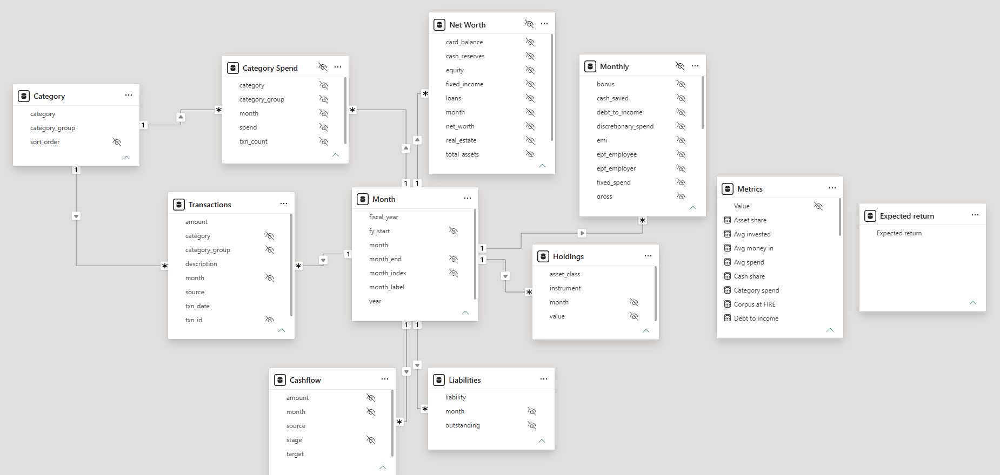
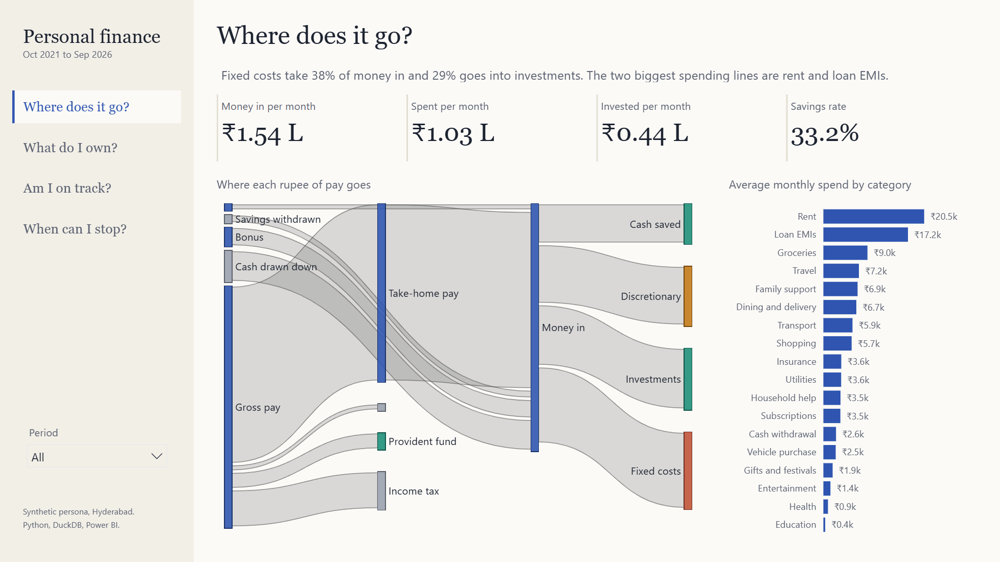
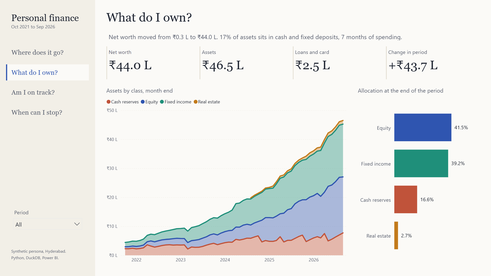
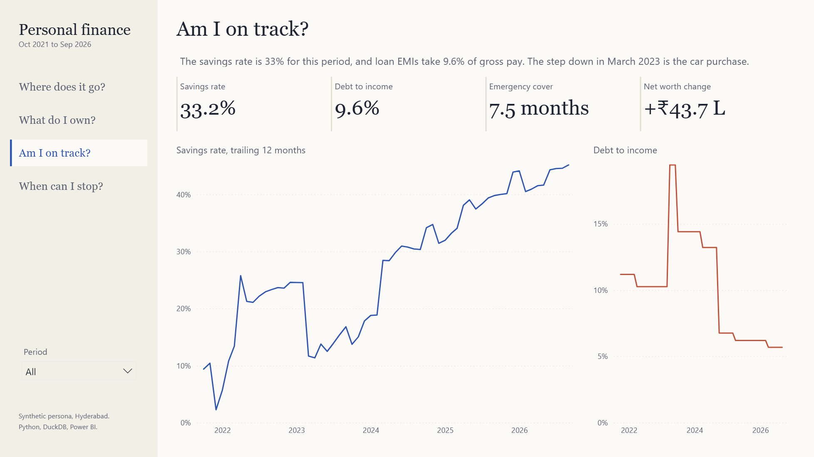
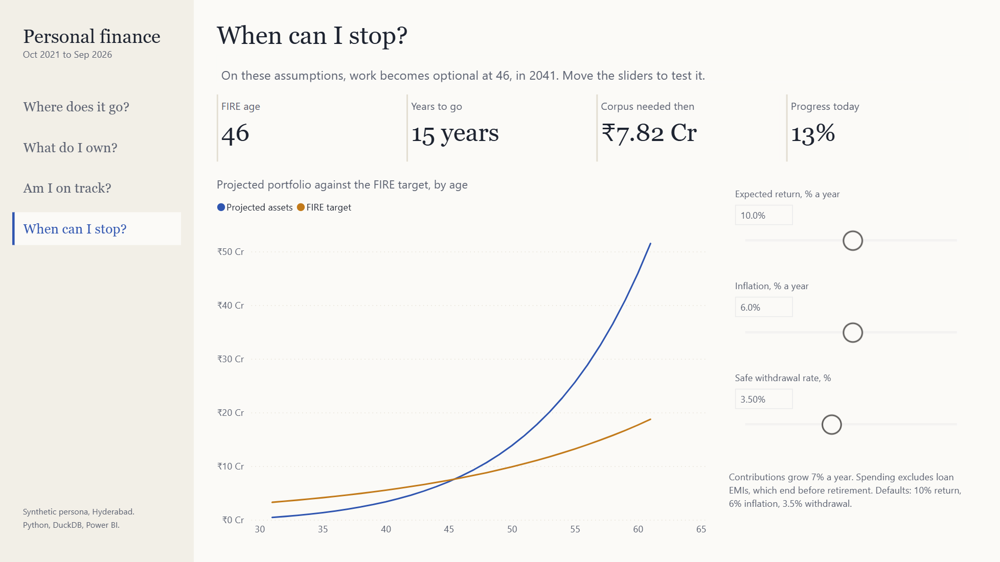

Personal finance, five years, four questions
An end-to-end analytics build: synthetic but realistic financial records, a tested SQL model in DuckDB, and a Power BI report that walks a reader through where money goes, what it built, whether it's on track, and when work becomes optional.
The problem
Personal finance data is scattered: a bank statement, a credit card statement, payslips, mutual fund confirmations, an EPF passbook, a loan schedule. Each answers a narrow question. None answers the ones that matter: where does the money actually go, what has it built, am I improving, and when could I stop working?
The brief was to bring those sources into one model and answer the four questions on a single, honest report: every number traceable to a source row, every total reconciled.
Why synthetic data. Real statements can't be published. Instead of a toy dataset, I wrote a generator that produces the exports a real person would have, with the same messiness (UPI references, card bills that pay last month's spending, bonus months, a broken fixed deposit), so the pipeline has to do real work.
The persona and the data
A software engineer in Hyderabad, aged 26 to 31, from October 2021 to September 2026. The generator (src/generate.py, seeded, so it's reproducible) simulates the life month by month:
- Pay: payslips with basic, EPF and income tax approximated from India's new-regime slabs; annual hikes, a 35% job switch in July 2023, April bonuses.
- Spending: rent with a move and yearly increases, family support, groceries, delivery, travel, Diwali sales, subscriptions, insurance, ATM cash.
- Debt: an education loan ending in 2024 and a car loan from 2023, both on true amortisation schedules.
- Saving: index and debt fund SIPs, PPF, two fixed deposits, office REIT units with quarterly distributions, EPF with yearly interest.
- Behaviour: optional investments only happen from cash the month can spare, so the bank balance never goes negative (an early version did, and the fix became a rule).
- Exports: 10 raw files: bank and card statements, payslips, fund and REIT logs, prices, EPF and PPF passbooks, FD register, loan sanctions.
Market prices are simulated, not real index data. The tax is an approximation, not a calculator.
The pipeline
Three SQL files, each one layer: staging types the raw exports into one signed ledger; model builds a star schema around a month dimension; marts produce report-ready tables. src/pipeline.py runs them, runs the checks, and only then exports.
- Categorisation as data, not code. 30 priority-ordered regex rules in
config/category_rules.csvsort 2,818 transactions into 28 categories in five groups (income, fixed, discretionary, investments, and transfers that net out). An analyst can change a rule without touching SQL. - Loan schedules in SQL. A recursive CTE builds full amortisation tables; month-end outstanding balances come from them, not from a hard-coded number.
- Accrual, not cash timing. Card spending counts in the month it happened, not when the bill is paid; the unpaid card balance becomes a liability. That's what makes the cashflow identity hold.

Proving it
A dashboard is only as good as the trust in its numbers. The pipeline refuses to export unless every check returns zero failing rows.
| Check | What it guarantees |
|---|---|
| Bank balance chains line by line | No transaction was dropped or duplicated. |
| Salary credit equals payslip net pay | Payroll and bank agree every month. |
| EMI debits match the amortisation schedule | The loan model and the bank tell the same story. |
| Card bill equals last month's net charges | Card spend isn't double-counted through the bill payment. |
| Cash saved equals change in bank minus change in card debt | The headline accounting identity holds every month. |
| Sankey flows balance at every node | The cashflow chart can't show money appearing or vanishing. |
| Every transaction has a category | Nothing hides in "uncategorised". |
Plus eight more: fund purchases match their log, gross pay splits fully into deductions, no negative balances or holdings, loans fully repaid, and the FIRE projection starts at today's assets.
Testing the tests. A check that can't fail is worthless, so I broke the data on purpose in six ways (an edited balance, a short EMI, an uncategorised line, an unbalanced flow, a wrong cash figure, a mismatched card bill). Each one was caught.
Report matches source. The final check queried the running Power BI model directly and compared it with DuckDB:
| Measure | Power BI | DuckDB |
|---|---|---|
| Average money in per month | ₹1.541836 L | ₹1.541836 L |
| Savings rate, 60 months | 33.222% | 33.222% |
| Debt to income | 9.645% | 9.645% |
| Net worth, Sep 2026 | ₹44.0229 L | ₹44.0229 L |
| FIRE age and corpus | 46, ₹7.8155 Cr | 46, ₹7.8155 Cr |
The report
The structure is a guided story, not a wall of charts. A left rail holds four questions; each page answers one, with a plain-English line that updates with the filters, four headline numbers, one hero visual and one supporting visual.
1. Where does it go?

2. What do I own?

3. Am I on track?

4. When can I stop?

What the data says
| Change one assumption | FIRE age |
|---|---|
| Base case: 10% return, 6% inflation, 3.5% withdrawal | 46 |
| Return 8% / 12% | 48 / 44 |
| Inflation 7% | 48 |
| Withdrawal rate 3% / 4% | 48 / 44 |
FY 2026-27 covers only April to September, so its 55% savings rate includes a bonus month and isn't comparable to full years.
Design decisions
- Questions as navigation. The four questions are the page names and the rail, so the report reads in order and each page has one job.
- Indian units. Lakh and crore throughout; FIRE maths uses Indian inflation, not a borrowed US 4% rule.
- Colour encodes meaning. Blue for income and equity, teal for money kept, ochre for discretionary, rust for fixed costs. The palette passed a colour-blindness and contrast validator before use.
- Honest charts. Axes start at zero; the noisy monthly series became a trailing 12-month line; sliders open on the values the maths uses.
Built as code
The Power BI project isn't hand-built: powerbi/build_pbip.py generates the semantic model (TMDL) and every report page (PBIR) from the DuckDB schema, so the report can be regenerated, reviewed in a diff, and versioned. Before Power BI opens it, validate_tmdl.ps1 parses the model with Power BI's own serializer. Rebuilding everything takes three commands:
python src/generate.py python src/pipeline.py python powerbi/build_pbip.py
Limits and next steps
- Synthetic data: the shape is realistic, but market returns are simulated and tax is approximated.
- FIRE projection is deterministic; a Monte Carlo range would show sequence-of-returns risk.
- Next: a budget-versus-actual page, a real-statement import path (CSV mapping per bank), and scheduled refresh.